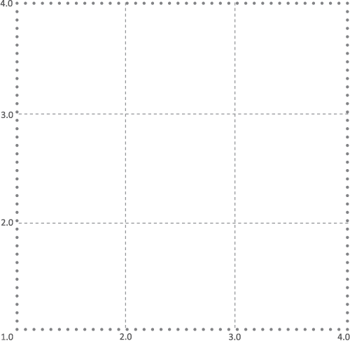

Скрытые сильные стороны
Скрытые сильные стороны
-
1Сотрудничество
ВАШИ ОЦЕНКИ
ОЦЕНКИ ОКРУЖАЮЩИХ

1
Сотрудничество
| Навыки установления контакта | Умение вызвать доверие | Навыки работы в команде |
Самооценка
Окружение
1.0
3.0
4.0
1.0
3.0
4.0
| Готовность оказать помощь и поддержку | Решение конфликтных ситуаций |
Самооценка
Окружение
1.0
3.0
4.0
1.0
3.0
4.0
Минимальная и максимальная
оценка среди всех групп окружения
оценка среди всех групп окружения
Этот символ означает, что оценка окружения и
самооценка отличаются более, чем на 0,5 балла
самооценка отличаются более, чем на 0,5 балла